Panorama 25 Aralık Müzesi'nin üç boyutlu Blender modellemesini dokuz ayrı bölüm (part00–part08) halinde tamamladık. Projenin bir sonraki aşaması için bu hazır 3B sahneleri doğrudan kullanan, mobil cihazlarda (Android ve iOS) çalışacak iki modlu bir Unity 3D uygulaması tasarladık: birinci mod müzeyi gezmek isteyenler için Sanal Müze Turu (Flythrough), ikinci mod ise oyunun tüm akışını gösterebilmek adına iki tam bölümden oluşan Hikâye Oyunu modudur.
Mobil kontrole uygun olması, müzenin her salonunu anlamlı şekilde kullanması ve Antep Savunması'nın tarihî ağırlığını koruması için oyun türünü birinci şahıs araştırma, tarihî bulmaca ve 360° taktik savunma olarak kurguladık. Bu dokümanda, Unity üzerinde kodlama aşamasına geçmeden önce düşündüğümüz oyun yapısını, bölümlerin işleyişini ve mevcut 3B modellerimiz üzerine hazırladığımız konsept ekran tasarımlarını sunuyoruz.
| Hedeflenen Başlık | Tasarladığımız Çözüm | Planlanan Çıktı |
|---|---|---|
| Flythrough uygulaması ve sergi karakterlerinin animasyonu | Tramvay durağından 360° Panorama alanına uzanan otomatik kamera turu, serbest gezinme modu, sesli/yazılı bilgi kartları ve vitrinlerdeki karakterlerin canlandırılması. | Mod A: 3B Sanal Müze Turu |
| Mobil platform için oyun geliştirilmesi | Tek seviye yerine oyunun başlangıcını, bulmaca yapısını ve final savunmasını eksiksiz gösteren iki bağlantılı bölüm. | Mod B: İki Bölümlü Mobil Hikâye Oyunu |
| Unity 3D, Blender ve yeniden kullanılabilir altyapı | Dokuz parçalı modüler sahne yapısı ve ScriptableObject tabanlı temiz C# kodu ile sonraki dönemlerde kolayca genişletilebilen proje yapısı. | Modüler Unity Projesi ve Geliştirici Notları |
Müze içi ve yakın çevresi, çektiğimiz 319 saha fotoğrafı referans alınarak Blender'da toplam 3.227 mesh ve 1.559 fizik çarpışma yüzeyinden (Colliders.fbx) oluşan dokuz modül halinde hazırlanmıştır. Mevcut sahnelerimizin listesi ve hem sanal turda hem de oyunda nasıl kullanılacağı Tablo 2'de özetlenmiştir.
| 3B Modül | Müze Bölümü | Hazır 3B Modeller | Uygulamadaki Rolü |
|---|---|---|---|
| part00 – 01 | 15 Temmuz Tramvay Durağı ve Giriş Meydanı | PT8 tramvay modeli, durak kanopileri, çevre yapılar, müze giriş avlusu | Ana menü canlı arka planı ve Flythrough başlangıç noktası |
| part08 | Sinevizyon Salonu | Kademeli koltuklar, sinema perdesi, salon aydınlatma ve duvar yapısı | Oyun giriş sahnesi (Intro): 1920 cephe günlüğü başlangıcı |
| part02 | Atrium ve Zemin Haritası | Dairesel galeri, sütunlar, yüksek çözünürlüklü Antep savunma haritası | Bölüm 1: Harita üzerinde cephe noktalarını ve Kastel hattını bağlama |
| part03 | Arşiv, Kıyafetler ve Silahlar | 22 tarihî belge duvarı, 23 adet 3B kıyafet/karakter modeli, top vitrini | Bölüm 1: Canlanan Antep savunmacılarından şifre ipucu toplama |
| part04 | Kastel ve Yazışma Koridoru | Taş kemerler, rampa, 1920 daktilosu, mektup ve telgraf masası | Bölüm 1 Finali: Kastel su bendi geçişi ve şifreli telgraf çözümü |
| part05 – 06 | Tablolar ve Üç Diorama Salonu | 10 yağlıboya tablo; fişek atölyesi, kağnı ve sahra hastanesi dioramaları | Bölüm 2 Başlangıcı: Canlanan dioramalarda cephe ikmal hazırlığı |
| part07 | 360° Ana Panorama Kubbesi | 122 m çevreli panoramik tuval, izleme platformu, 3B ahşap siperler | Bölüm 2 Finali: 360° dürbünle cephe gözetleme ve siper savunması |
Uygulama açıldığında tramvay durağı sahnesi üzerinde ana menü yer alır. Kullanıcı buradan doğrudan Sanal Müze Turu'na girebilir ya da iki bölümlük Hikâye Modu'nu başlatabilir (Şekil 1).
|
1. Ana Menü
Canlı 3B Sahne (part00–01) Flythrough veya Oyun Seçimi |
→ |
2. Giriş (Intro)
Sinevizyon Salonu (part08) Eksik 1920 Günlüğü |
→ | 3. Bölüm 1 Arşiv İpuçları → Harita Rotası → Kastel Telgrafı | → | 4. Bölüm 2 Diorama İkmali → 360° Panorama Savunması | → | 5. Kapanış 25 Aralık Sabahı ve Kahraman Kartları |
Sanal Müze Turu modunda iki gezinme seçeneği bulunur: Unity Cinemachine ile hazırlanan otomatik sinematik kamera rotası ve dokunmatik kontrollerle gezilebilen serbest yürüyüş modu. Ziyaretçi galerilerde ilerlerken önemli eserlerin önünde Türkçe yazılı ve sesli bilgi kartlarını açabilir. Şekil 2'de mevcut Blender tramvay sahnemiz, Şekil 3'te ise bu sahne üzerine düşündüğümüz ana menü konsepti yer almaktadır.
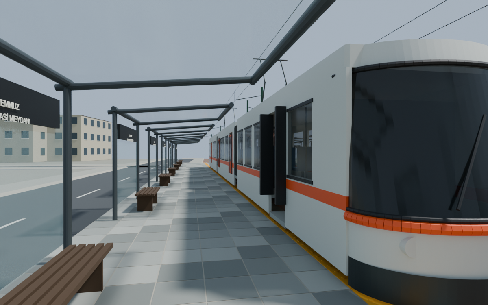
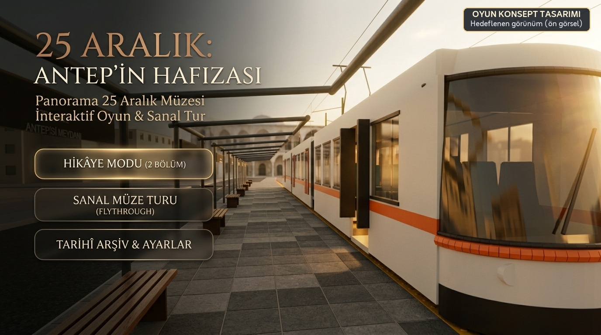
Hikâye modunda oyuncu, Antep Savunması gazisi büyükbabasından kalan ve son sayfaları eksik olan 1920 tarihli bir cephe günlüğü ile müzeye gelen genç bir araştırmacıyı yönetir. Oyuncu önemli vitrinlere yaklaştığında ortam ışığı yumuşakça değişir; müzede sergilenen yöresel Antep savunmacıları ve diorama karakterleri Mixamo tabanlı iskelet animasyonlarıyla (konuşma, işaret etme, cephe hazırlığı) canlanarak oyuncuya o günkü görev ve şifre ipuçlarını aktarır (Şekil 4 ve Şekil 5).
Mobil ekranı kalabalıklaştırmamak için sol altta sanal Joystick, sağ tarafta dokunmatik kamera bakışı ve yalnızca etkileşimli bir nesneye yaklaşıldığında beliren tek bir aksiyon butonu (Belgeyi İncele, Rotayı Bağla, Siperi Güçlendir) kullanılacaktır.
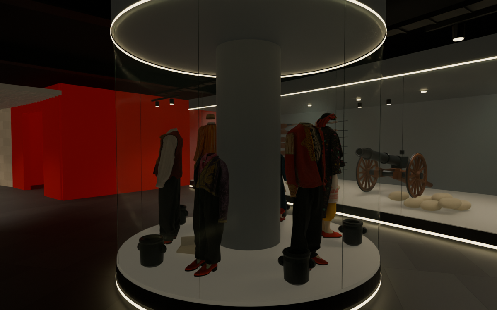
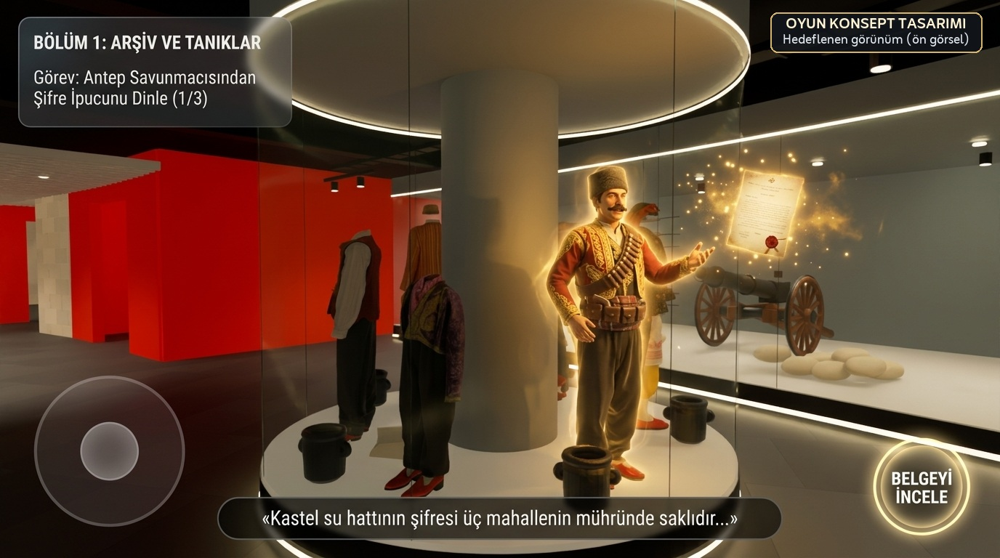
Birinci bölüm keşif ve bulmaca odaklıdır. Kuşatma sırasında mahalleler arası yüzey bağlantısı kesildiğinde, Antep halkı şehrin altındaki taş su kanallarını (Kasteller) gizli haberleşme ve erzak yolu olarak kullanmıştır. Oyuncunun amacı, arşivdeki ipuçlarını toplayıp harita üzerinde güvenli Kastel rotasını açmak ve şifreli telgrafı karargâha göndermektir:
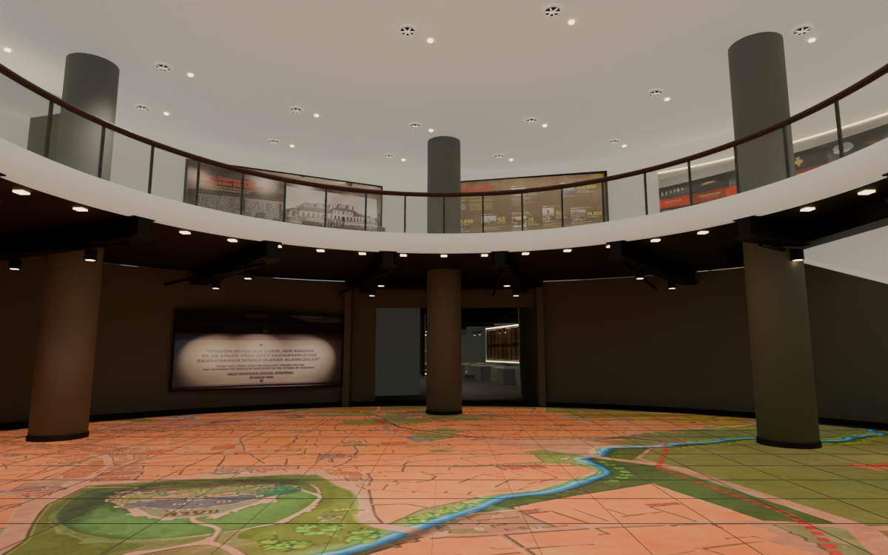
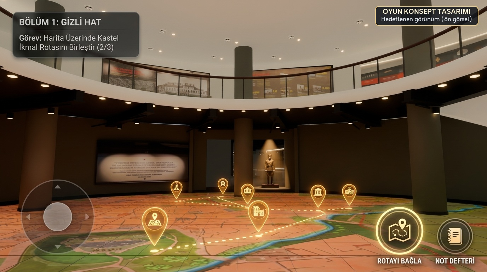
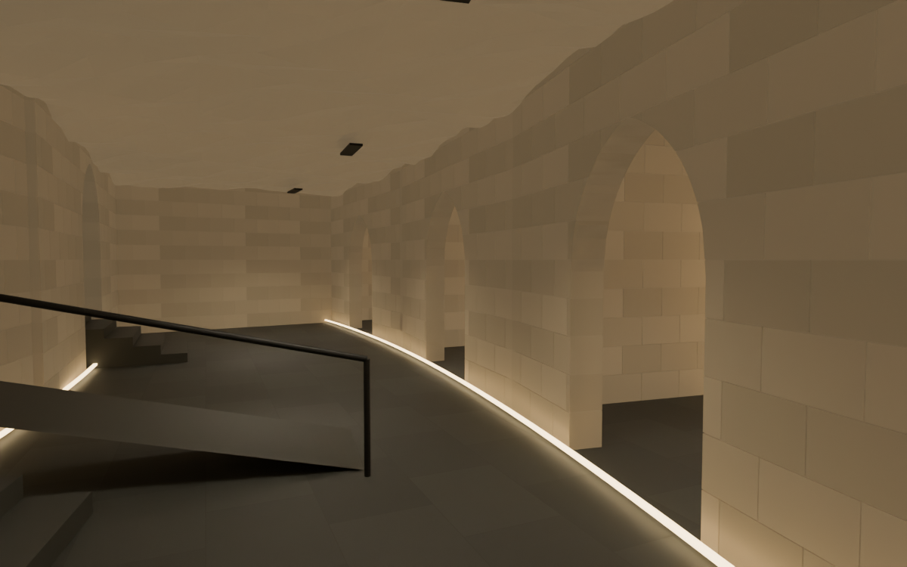
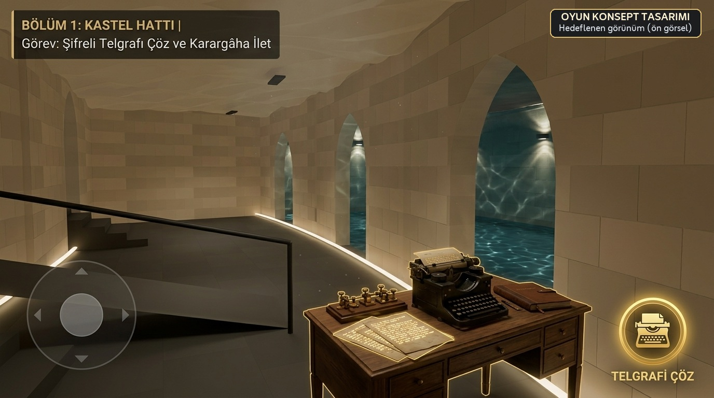
İkinci bölüm daha hareketli bir tempoya sahiptir; cephe gerisi hazırlığını ve 360° Panorama salonundaki son savunmayı konu alır:
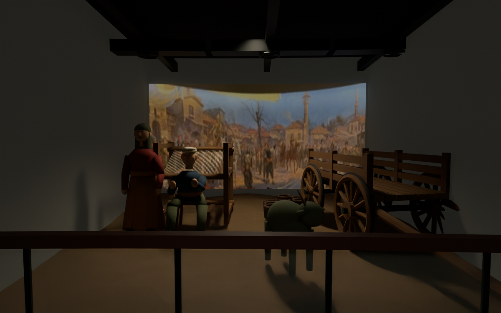
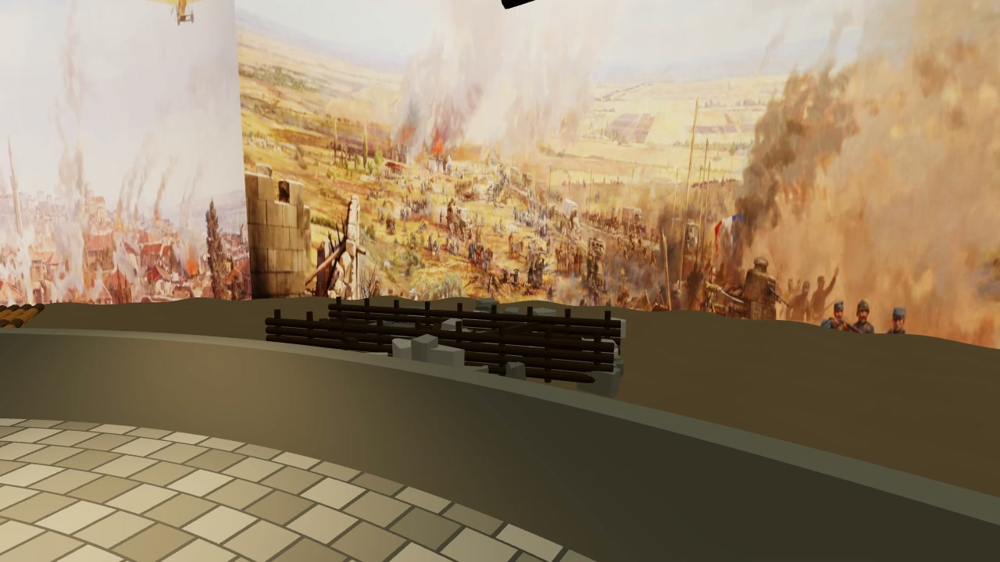
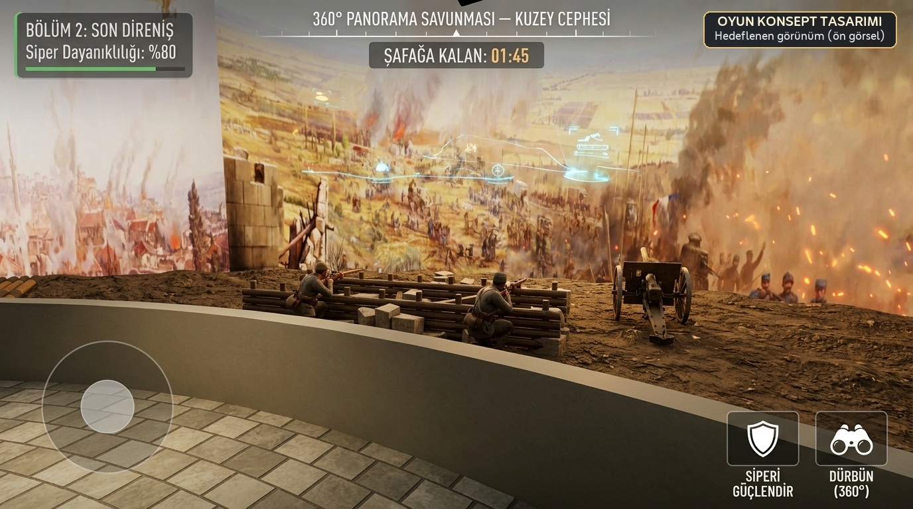
Birleşik Blender dosyamız yaklaşık 1,86 milyon poligon ve 94 doku içerdiği için, sahneyi tek parça halinde mobil belleğe yüklemek yerine dokuz parçalı yapımızı doğrudan değerlendireceğiz:
| Aşama | Çalışma Başlığı | Yapılacak Teknik İşlemler |
|---|---|---|
| 1. Adım | Sahne Aktarımı ve Optimizasyon | part00–08 ve Colliders.fbx dosyalarının Unity URP projesine aktarılması, ASTC doku sıkıştırma, LOD ve statik ışık (Lightmap) ayarları. |
| 2. Adım | Mobil Kontroller ve Flythrough | Mobil birinci şahıs kontrolcüsünün, Cinemachine otomatik kamera turunun ve sesli/yazılı eser bilgi kartlarının hazırlanması (Mod A). |
| 3. Adım | Karakter Animasyonları ve Bölüm 1 | Vitrin karakterlerine Mixamo animasyonlarının eklenmesi; Arşiv ipucu sistemi, zemin haritası rota bulmacası ve Kastel telgraf şifresinin kodlanması. |
| 4. Adım | Bölüm 2: Diorama ve 360° Savunma | Diorama ikmal mini görevlerinin, 360° dürbün sisteminin, üç dalgalı siper dayanıklılık ve top yönlendirme mekaniğinin kodlanması. |
| 5. Adım | Arayüz, Ses ve Mobil Cihaz Testleri | Türkçe menü ve oyun içi arayüzlerin tamamlanması, ses efektlerinin eklenmesi ve farklı Android/iOS ekranlarında performans testleri. |
Onayınız ve yönlendirmeleriniz doğrultusunda, yukarıda özetlediğimiz akış ve teknik yapı üzerinden Unity 3D geliştirme aşamasına başlamayı planlıyoruz.